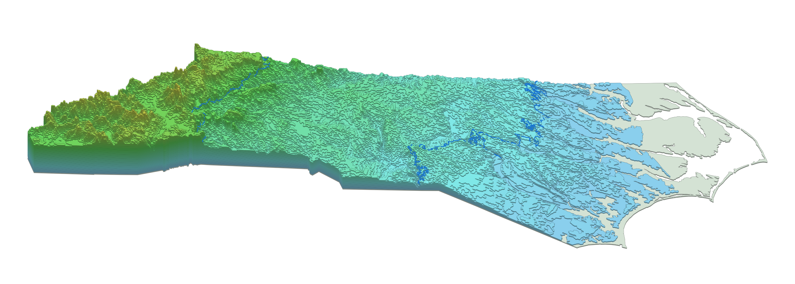
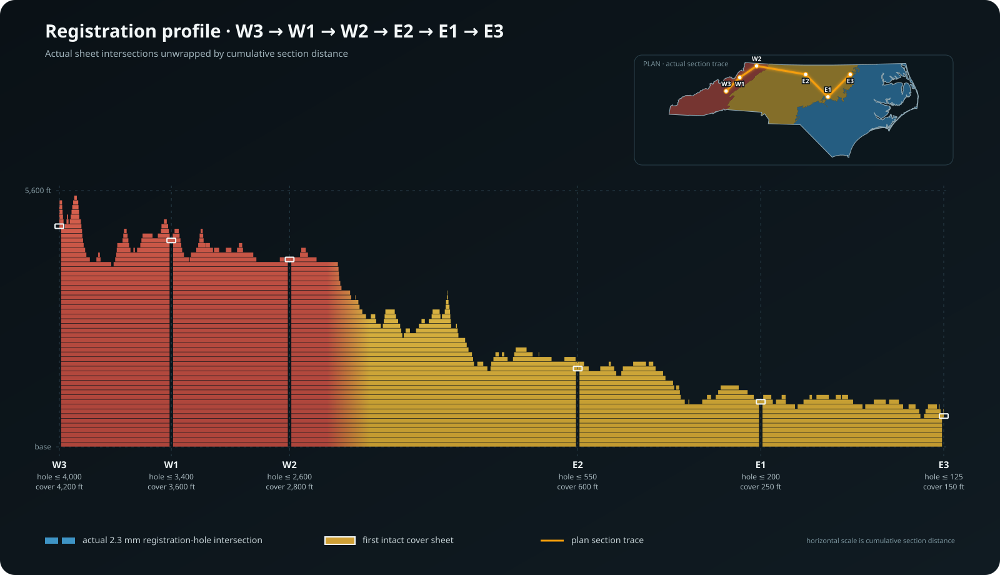

Case study 01 / QGIS + physical fabrication
North Carolina in 54 layers.
I used QGIS to turn statewide elevation data into nested contour sheets for a 50-inch laser-cut map. This page shows both sides of the project: building reliable geometry on the computer and working out how to cut, register, and stack it in the real world.
Back to survey projects- Horizontal scale
- 1:850,000
- Physical layers
- 54 sheets
- Finished footprint
- 50 × 15 in
- Highest modeled layer
- 5,600 ft
Interactive model / The actual 54-sheet stack
See each contour sheet.
Move the slider to choose the highest visible sheet. The model keeps that contour and every sheet below it, just like the physical stack. Drag to rotate, scroll to zoom, or let it turn on its own.

Loading the 54 contour sheets…
The colors follow the project's approximate physiographic boundary polygons. A short gradient at each shared edge keeps the three regions distinct without drawing a hard stripe across the state.
Section view / W3 → W1 → W2 → E2 → E1 → E3
The registration-pin line, opened into a profile.
I cut the same six-point path through every contour sheet, then laid those cuts out in a straight line. The result works like a utility profile: each horizontal band is one physical sheet, and the gaps show where a registration hole still passes through that elevation.

Computer work / QGIS geometry
Building the contour stack.
Set one statewide working grid
I paired a U.S. Census North Carolina boundary with USGS 3DEP one-arc-second elevation data, then worked in North Carolina State Plane coordinates (EPSG:32119). So the elevation surface was resampled to a consistent working grid before the actual contour extraction.
Keep every sheet inside the one below it
Each layer represents all ground at or above one elevation. I converted those thresholds into nested polygons, then checked validity, containment, slivers, and disconnected pieces. A small error low in the stack would carry through dozens of physical layers when represented in the real world.
Use intervals that fit each region
The stack uses 25-foot intervals across the Coastal Plain, 50-foot intervals through the Piedmont, and 200-foot intervals in the mountains. That keeps the low relief on the coast visible while preventing the Appalachian Mountains from becoming a truly impractical number of sheets to cut.
Separate geography from fabrication changes
The geographic file preserves the mapped geometry. The fabrication file removes features that would not cut reliably, divides sheets to fit the machine, adds elevator-pin registration holes, and carries the physiographic boundaries for the Coastal Plain, Piedmont, and Mountains.
Manufacturing / cutting / From file to stacked board
Making 54 sheets line up.
The finished map is 50 × 15 inches, so each statewide layer is divided into East and West cutting layouts sized for the available laser bed. Both halves keep the same coordinate origin and placement marks.
Each registration pin stops below the first contour that naturally closes over its location. The next intact sheet becomes its cover: from 150 feet at E3 to 4,200 feet at W3.
The 1.297 mm white matboard sheets are cut as cumulative areas, not loose contour rings. Registration holes, seam logic, and consistent sheet order keep the stack from drifting as the layers build upward.
I kept source, geographic, fabrication, split-sheet, and layout outputs separate. That makes it possible to trace a cut change without quietly changing the mapped contour beneath it.
Data and references
The case study uses public elevation and boundary data. The web model is a simplified derivative of my QGIS fabrication layers.